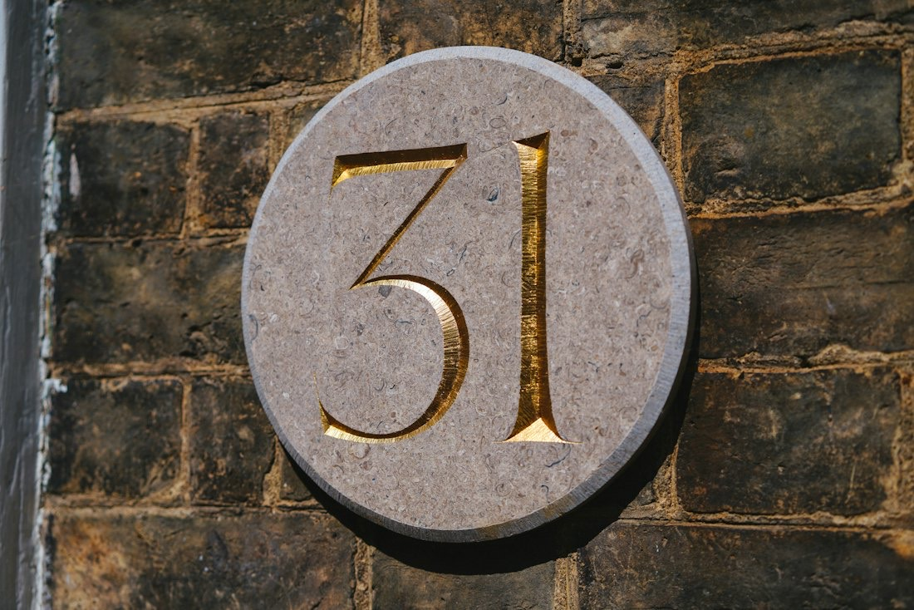
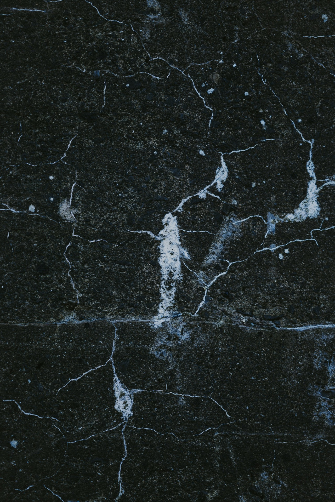
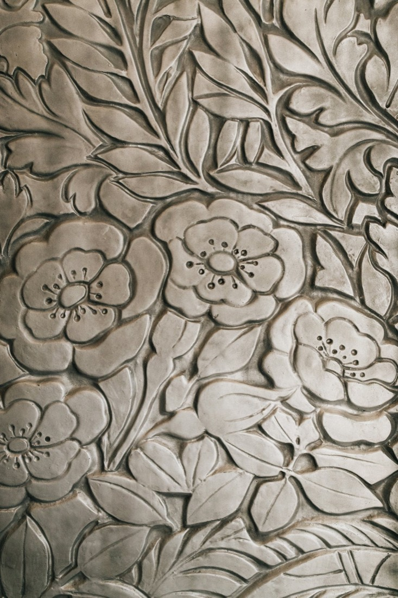
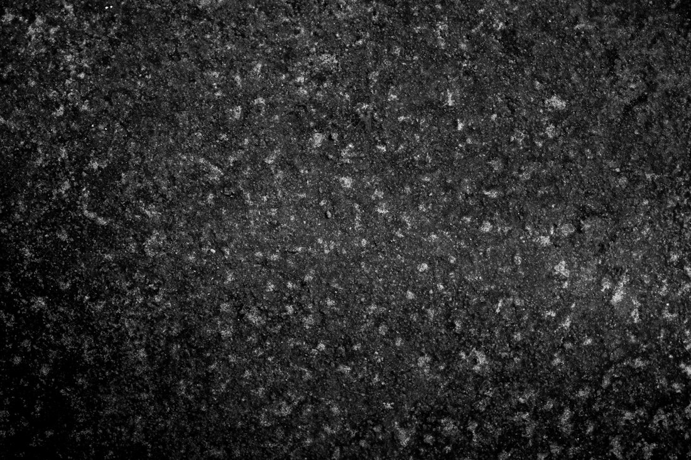
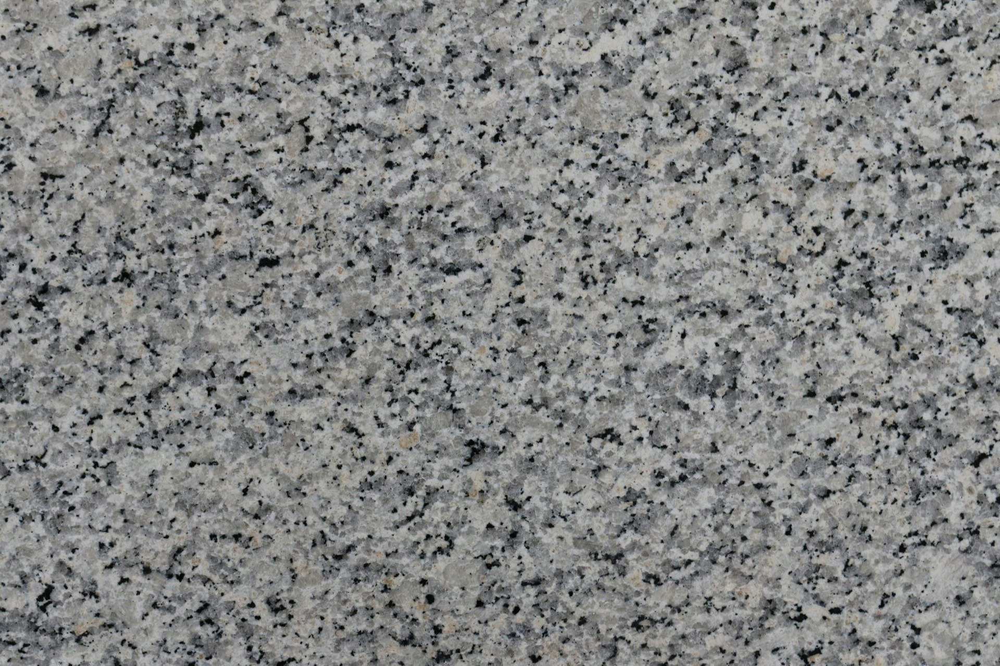

完全オーダーの表札
石の種類・色から、字体と文字の色まで、自由に組み合わせられます。

表札・ペット彫刻・石の製作販売 静岡市西脇
独自のマイクロ（微細）サンドブラスト加工で、石材を繊細に彫刻します。表札、ペットの似顔絵、家紋、定礎まで、石のことならおまかせください。
表札を、試しに彫る
独自のマイクロ（微細）サンドブラスト加工で、石材を繊細に彫刻します。
表札の3Dイメージです。実際の石・字体とは異なります
サンドブラストとは、コンプレッサーからの圧縮エアーで、砂状の研磨材を吹き付けて彫刻する技法です。当社の研磨材は通常よりさらに細かい材料を使っているため、微細な加工ができます。
ペットの写真をお借りして、天然御影石に線彫刻で肖像画を制作します。毛並み一本一本まで丁寧に描くので、表情豊かで柔らかみのある作品に仕上がります。

石の種類・色から、字体と文字の色まで、自由に組み合わせられます。

写真から、天然御影石に線彫刻で。

標準の品は、オンラインショップからも注文できます。

| ご注文 | 表札・ペット彫刻・定礎などのオーダーメイドは、ご注文ページから |
|---|---|
| お問い合わせ | お電話・FAX・メールで |
石の種類・字体のご相談から承ります。